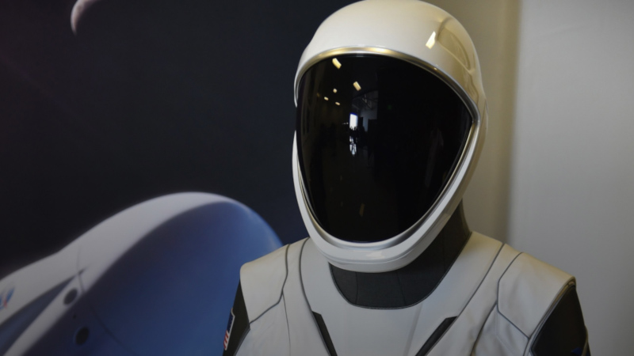

In order to conduct any missions that involve going into space, and subsequently existing our atmosphere, a multitude of materials are required to both protect the spacecraft and the astronauts aboard. For example, this may include heat shields for the base of the SpaceCraft on re-entry and pressurised suits for the astronauts which contain a limited oxygen supply. Modern space agencies such as SpaceX has also employed 3D-printing to assist with the creation of these materials. Specifically, SpaceX uses 3D-printing to construct the astronaut helmets that will be used for the next mission aboard either Falcon Heavy or StarShip.
Heat Shields are fitted on nearly all spacecraft, depending of what they are made of, in order to withstand the heat of re-entry. A common example includes on the space shuttle. The aluminium that comprised the orbiter is unable to withstand heat above 175 degrees celcius. However, upon re-entry aerodynamic heating would increase the temperature well beyond this to approximately 1650 degrees celcius. This lead to the space shuttle thermal protection system (TPS) which insulated the SpaceCraft.
In order to conduct any missions that involve going into space, and re-entry through the atmosphere, a multitude of materials are required to both protect the spacecraft and the astronauts aboard. For example, this may include heat shields for the base of the SpaceCraft on re-entry and pressurised suits for the astronauts which contain a limited oxygen supply. Modern space agencies such as SpaceX has also employed 3D-printing to assist with the creation of these materials. Specifically, SpaceX uses 3D-printing to construct the astronaut helmets that will be used for the next mission aboard either Falcon Heavy or StarShip.
The TPS used on the space shuttle consisted of seven different materials that were responsible for varying degrees of heat insulation and so were placed at different locations on the ship. One notable example was the 'High-temperature reusable surface insulation tiles'. These tiles were used in areas where the temperature was below 1260 degrees fahrenheit and was coated in LI-900 silica ceramic. As a demonstration of the insulative properties, engineers showed that the material could be held in ones hand immediately after being heated to this temperature.
The LI-900 silica ceramic coating provides such good insulation to these titles because both Air and silica are extremely poor conductors of heat. As a result, they make very good insulators. This is the reason they have be held almost immediately after being removed from a oven which heats them to 2200 degrees fahrenheit. Aboard the space shuttle, these tiles were responsible for for protecting the aluminum hull from the intense heat upon re-entry. However, although these tiles make very good insulators, they remain fragile materials. As a result, they were not mechanically attached to the hull, rather they were glued on by hand so they could easily be replaced. Each tile was then checked individually before the space shuttle conducted a mission.
The LI-900 silica ceramic coating provides such good insulation to these titles because both Air and silica are extremely poor conductors of heat. As a result, they make very good insulators. This is the reason they have be held almost immediately after being removed from a oven which heats them to 2200 degrees fahrenheit. Aboard the space shuttle, these tiles were responsible for for protecting the aluminum hull from the intense heat upon re-entry. However, although these tiles make very good insulators, they remain fragile materials. As a result, they were not mechanically attached to the hull, rather they were glued on by hand so they could easily be replaced. Each tile was then checked individually before the space shuttle conducted a mission.
The term 3D printing is used to describe the process of combining/solidifying materials under computer control to form a 3D object. The material used during this process in usually added layer by layer and may be liquid molecules or powder grain. The popularity of this method has grown in prevalence over time. One notable example is the astronaut helmet implemented in SpaceX's pressurised suit design. The majority of the materials on this helmet are 3D-printed. NASA has also conducted a series of competitions where teams compete to 3D print specific structures. One example employed the theme of habitation and held a 3D-printed habitat competition. Following 30hrs of 3D-printing, the winning team was awarded $700,000.
Early in the development of Starship, the vehicle that will take astronauts to Mars, Elon Musk first announced the use of carbon Fiber to construct the ship. However, this decision was changed for the use of Stainless steel. There were many factors which motivated the switch of materials. The biggest of which was the cost. Typically carbon fiber costs approximately $135 per kilogram. However, in an interview, Elon Musk explained that the material must be cut to fit specific sections of the spacecraft. As a result, they will be unable to use some of the material so the real cost will be approximately $200 per kilogram. In comparisons, stainless steel is roughly $3 per kilo. Another major advantage is that stainless steel has a very high melting point compared to carbon fiber. For example, carbon fiber can withstand 300 degree fahrenheit, and may be pushed to around 400 DF if strength proficiency is sacrificied as the material is pushed. However, stainless steel can typically withstand 1500-1600 degress fahrenheit, so provides much more protection against the intense heat during re-entry.
The StarShip spacecraft will carry approximately 100 passengers, and is aimed to be launched in 2024 to transport the first people to Mars. The ship will be lanuched by a first stage unit termed the 'super heavy'. It will consist of a series of Falcon-9 rockets, similar to that of the Falcon heavy, but with more boosters. This vehicle is designed to be fully reusable as both the Falcon-9 boosters and the StarShip spacecraft itself are designed to land once they have completed their allocated tasks. This is already possible with the Falcon-9 boosters which will be used, but addional tests must be done to assure the safety of using addional boosters during liftoff, and test the flight and landing of the StarShip unit itself.